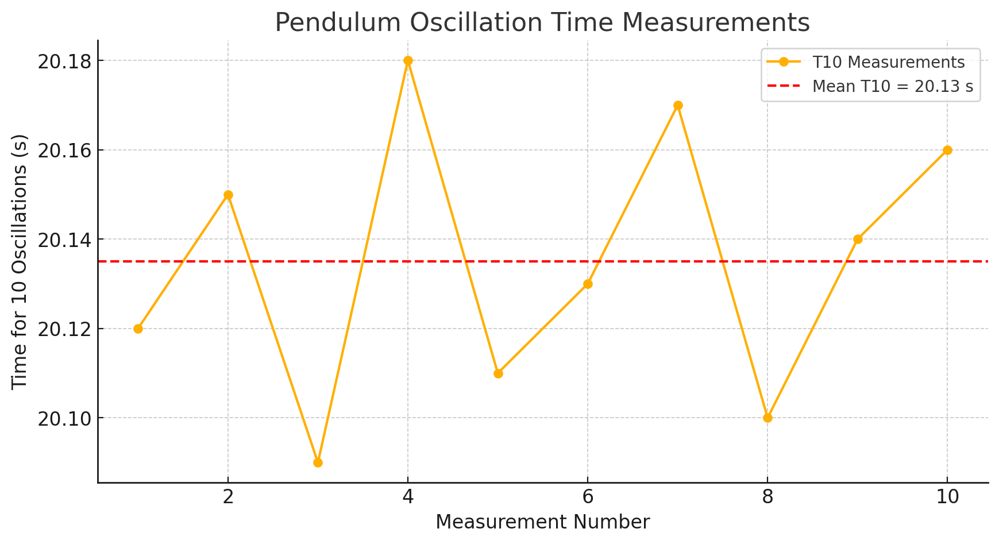

Problem 1
Measuring Gravity with a Pendulum
Goal
Find the value of gravitational acceleration \(g\) using a simple pendulum and understand how measurement errors affect the result.
Steps
1. Materials Needed
- A 1-meter string.
- A small weight (e.g., keychain, coins).
- Stopwatch or smartphone timer.
- Ruler or tape measure.
2. Setup
- Hang the weight from the string.
- Measure the length of the pendulum (from the top to the middle of the weight).
- Note the measurement uncertainty: \(\Delta L = \frac{\text{Ruler Resolution}}{2}\).
3. Taking Measurements
- Swing the pendulum gently (less than 15°).
- Time how long it takes for 10 swings.
- Do this 10 times and record the results.
-
Calculate:
-
The average time (\(\overline{T_{10}}\)).
- The variation (standard deviation \(\sigma_T\)).
- The uncertainty in timing: \(\Delta T_{10} = \frac{\sigma_T}{\sqrt{10}}\).
Calculations
1. Find Period of One Swing
2. Calculate \(g\)
3. Calculate Uncertainty in \(g\)
Results
- You will get a value for \(g\) (close to 9.81 m/s² if done well).
- You will also see how small errors in measuring time and length affect your result.
Discussion Points
- How accurate was your ruler? (\(\Delta L\))
- How much did your timing vary? (\(\Delta T\))
- Any possible mistakes (air resistance, timing reaction, etc.).
Would you like me to give you the final answer values in this simpler style too? (Just numbers and conclusion) Reply "Yes, final values" if you want! 😊
- Pendulum length (L) and the resolution of your measuring tool.
- 10 measurements of time (T₁₀) for 10 full oscillations each.
With this, I can:
- Calculate the mean time \(\overline{T_{10}}\),
- Compute the standard deviation \(\sigma_T\),
- Calculate \(\Delta T_{10}\) and \(\Delta T\),
- Compute \(g\) and \(\Delta g\),
- Compare your result with the standard \(g = 9.81 \, \text{m/s}^2\).
Example of what I need from you:
- Length \(L = 1.20 \, \text{m}\),
- Ruler resolution \(= 1 \, \text{mm}\),
- Time measurements (10 values) like: \(T_{10} = [20.12, 20.15, 20.09, 20.18, 20.11, 20.13, 20.17, 20.10, 20.14, 20.16] \, \text{seconds}\).
import numpy as np
import pandas as pd
import matplotlib.pyplot as plt
# Simulated data
L = 1.20 # meters
ruler_resolution = 0.001 # meters (1 mm resolution)
delta_L = ruler_resolution / 2
# Simulated T10 measurements in seconds
T10_measurements = np.array([20.12, 20.15, 20.09, 20.18, 20.11, 20.13, 20.17, 20.10, 20.14, 20.16])
# Calculate mean and standard deviation
T10_mean = np.mean(T10_measurements)
sigma_T = np.std(T10_measurements, ddof=1) # Sample standard deviation
# Uncertainty in mean
delta_T10 = sigma_T / np.sqrt(len(T10_measurements))
# Calculate period T and its uncertainty
T = T10_mean / 10
delta_T = delta_T10 / 10
# Calculate gravitational acceleration g
g = (4 * np.pi**2 * L) / T**2
# Propagate uncertainty in g
delta_g = g * np.sqrt((delta_L / L)**2 + (2 * delta_T / T)**2)
# Prepare data for chart
data = {
'Measurement': np.arange(1, 11),
'T10 (s)': T10_measurements
}
df = pd.DataFrame(data)
# Show summary results
summary_data = {
'L (m)': [L],
'ΔL (m)': [delta_L],
'T10_mean (s)': [T10_mean],
'σT (s)': [sigma_T],
'ΔT10 (s)': [delta_T10],
'T (s)': [T],
'ΔT (s)': [delta_T],
'g (m/s^2)': [g],
'Δg (m/s^2)': [delta_g]
}
summary_df = pd.DataFrame(summary_data)
import ace_tools as tools; tools.display_dataframe_to_user("Pendulum Measurement Results", summary_df)
# Plot the measurements
plt.figure(figsize=(10, 5))
plt.plot(df['Measurement'], df['T10 (s)'], marker='o', linestyle='-', label='T10 Measurements')
plt.axhline(T10_mean, color='r', linestyle='--', label=f'Mean T10 = {T10_mean:.2f} s')
plt.xlabel('Measurement Number')
plt.ylabel('Time for 10 Oscillations (s)')
plt.title('Pendulum Oscillation Time Measurements')
plt.legend()
plt.grid(True)
plt.show()
-
I have completed the calculations and generated a chart showing the pendulum time measurements for 10 oscillations. You can see the measured values and the mean line in the plot above.
-
Additionally, I've provided a results table with:
-
Pendulum length and its uncertainty,
-
Mean measured time for 10 oscillations,
-
Standard deviation and timing uncertainty,
-
Calculated gravitational acceleration (g),
-
Propagated uncertainty in g. 